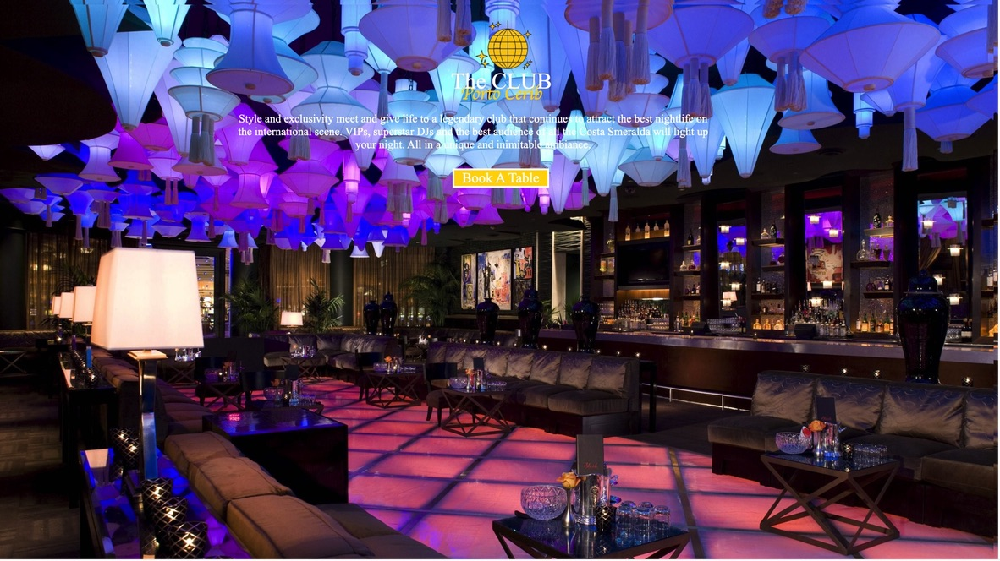

Lab 14: Typography II
Big Idea
The idea of this lab is to continue working with a partner and experiment about the use of block-level and typography css to recreate a more complicated webpage.
Challenge
It was a challenge, it did took me time to have everything perfectly placed. Took a while to find to match the font too.
Problems
In genereal, having a better access to match fonts can make things easier for anyone.
Results
Here are the results, enjoy!
Original website screenshot
Fake live website screenshot